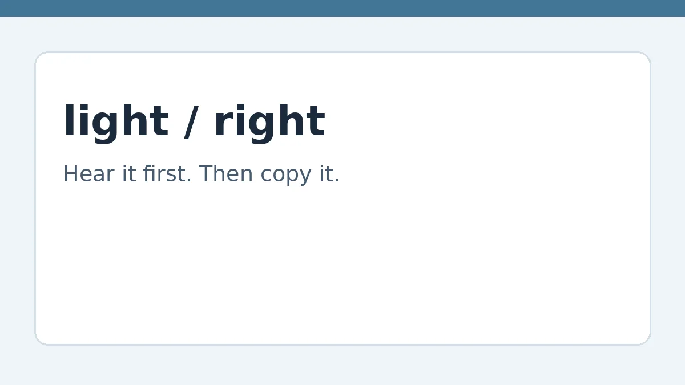

American Pronunciation for Japanese Speakers

Sales page — the full guide is not on this page. The information itself is held privately and delivered to buyers only. What follows is what the guide covers and who it is for, so you can decide whether to buy it when checkout is live.
Japanese has one quick tongue-tap where American English has two different sounds. This guide trains your ear and your mouth separately, in 15 minutes a day, so listeners understand you the first time. The goal is intelligibility: being clearly understood. It is not accent elimination, not sounding native, and it makes no results guarantee.
Who this is for
Japanese speakers who read English well but are asked to repeat themselves when speaking, especially at work, in meetings, or in speaking-test read-aloud tasks. It is American English only, and pronunciation only — not grammar, vocabulary, or British English.
What's inside
The full guide, held in a private store and delivered to buyers only, covers 9 modules:
- Hear it before you say it
- American R
- American L
- American flap T
- TH: think and this
- V vs B, and final sounds
- American vowels Japanese does not have
- No extra vowels, no dropped clusters
- Stress, rhythm, and linking
Plus a 15-minute daily routine, a self-check, and audio drills.
Audio status — please read: the audio drills are not yet recorded. Jonathan will record them in his own American voice later. Do not treat any sample audio elsewhere as the finished drills.
Proposed price, to decide only: $19–$29 for the guide pack. No checkout is live, and no payment is being taken.
How you will get it, when it is live
Buyers will receive the full guide and audio through a private delivery link with a buyer key. That delivery is not live yet — this page is the sales page only, and the full information is not published here.
Related guides
If you plan to write about your practice, see how to grow a blog audience. If you plan to use your English on a trip, see the 5-day Tokyo and Kyoto travel guide. If you plan to charge for language help, see how to track work and price a job.